Home / Krehbiels / 015 Krehbiel Robert
015 Krehbiel Robert
Pictures of Robert (Bob) Krehbiel before marriage.
← Return to Krehbiels
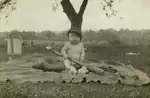
kre015-00001
1933 Bobby Krehbiel baby with bat and glove. Bobby Krehbiel, presumably 1933. Updated: 11 Jul 2005
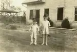
kre015-00002
1936 Bobby and Billy in army caps. Bobby (left) and Billy Krehbiel. The caps look like they might be from Elmer's WWI army uniform, at least the one on the right does. Updated: 9 Jul 2005
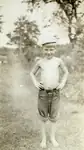
kre015-00003
1937 Bob Krehbiel missing front teeth. Bob Krehbiel, approx. 1937 according to Dad's note. Updated: 11 Jul 2005
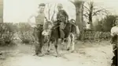
kre015-00004
193x Bobby riding calf. Bill Krehbiel (left) and Bob Krehbiel (riding cow). Probably Mary Katherine at right of picture. Updated: 9 Jul 2005
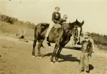
kre015-00005
193x Bobby, Billy, Jean on horse Bird. Jean and Bob Krehbiel (riding horse Bird), Bill Krehbiel (standing). Updated: 9 Jul 2005
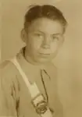
kre015-00006
1946-47 Bob Krehbiel safety patrol portrait. Bob Krehbiel, 1946-47. Updated: 11 Aug 2005
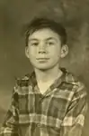
kre015-00007
194x Bob Krehbiel portrait. Bob Krehbiel, approx. age 8. Updated: 9 Jul 2005
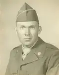
kre015-00008
1954 Bob Krehbiel casual army portrait Updated: 9 Jul 2005
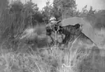
kre015-00010
195x Bob Krehbiel behind .50 caliber machinegun. Dad wrote: That is me behind a fifty. Updated: 11 Aug 2005
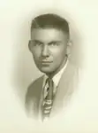
kre015-00011
195x Bob Krehbiel high school portrait Updated: 9 Jul 2005
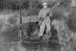
kre015-00012
195x Bob Krehbiel on patrol. Dad wrote: That is me. A real field soldier. Updated: 11 Aug 2005
11 photos available in this directory.
Copyright © 2005–2026 Thomas Krehbiel. Images are freely distributable for personal use. For more information about these images contact Thomas Krehbiel (tkrehbiel@gmail.com).
Photos were scanned at either 300dpi or 600dpi, depending on the quality of the photograph. Slides were scanned at 1800dpi. Documents were scanned at 100dpi or 150dpi. Photoshop enhancements: most images have had their contrast improved. Some color photos were corrected to restore color balance. Some blurry images were mildly sharpened. Occasionally dust, scratches, and blemishes were removed digitally.